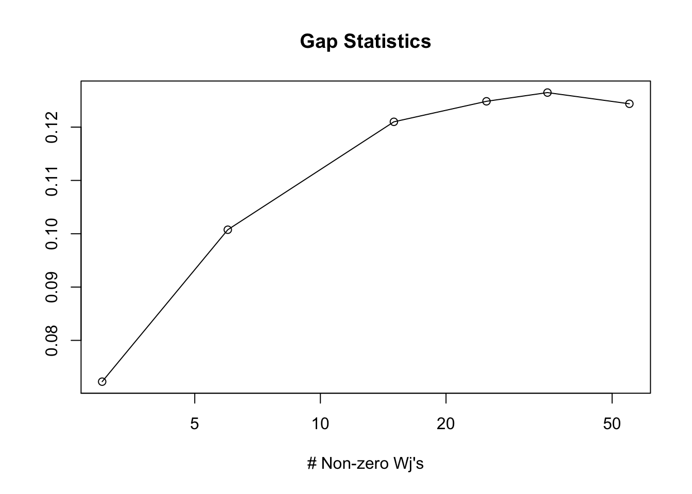
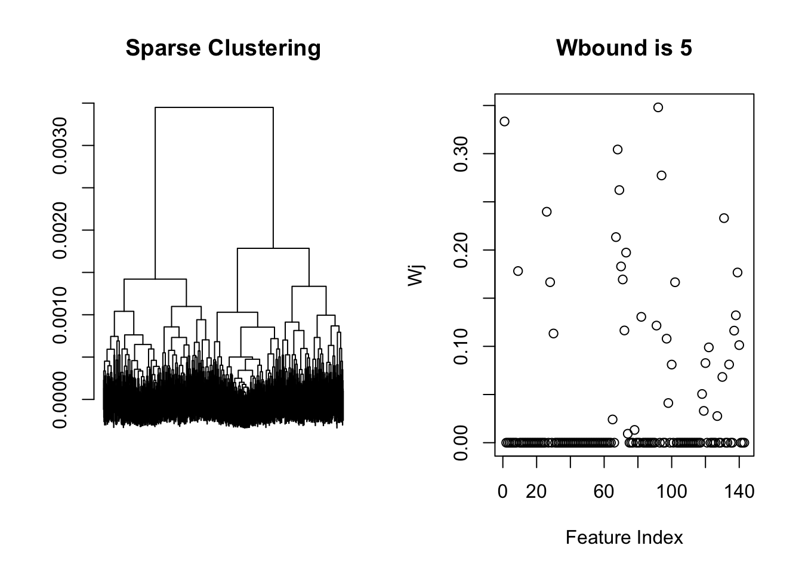
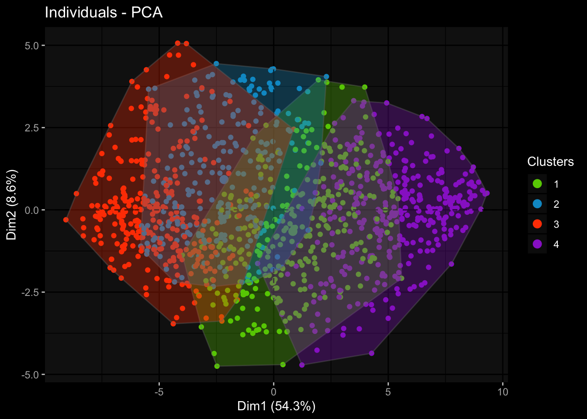
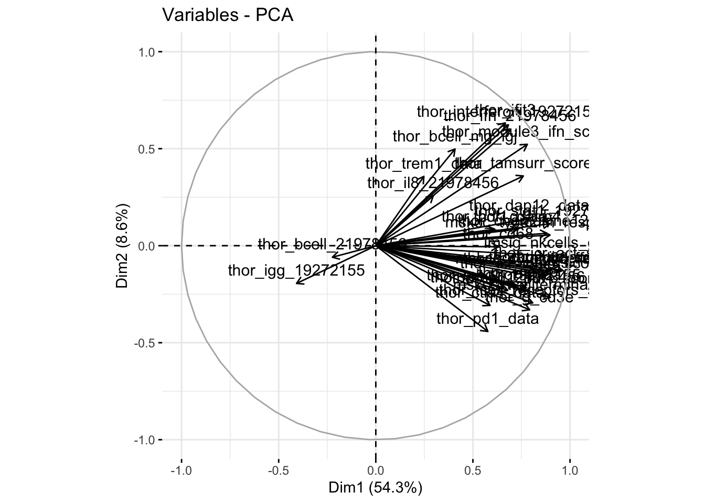

Last updated: 2019-07-20
Checks: 7 0
Knit directory: dlbcl_landscape/
This reproducible R Markdown analysis was created with workflowr (version 1.4.0). The Checks tab describes the reproducibility checks that were applied when the results were created. The Past versions tab lists the development history.
Great! Since the R Markdown file has been committed to the Git repository, you know the exact version of the code that produced these results.
Great job! The global environment was empty. Objects defined in the global environment can affect the analysis in your R Markdown file in unknown ways. For reproduciblity it’s best to always run the code in an empty environment.
The command set.seed(20190613) was run prior to running the code in the R Markdown file. Setting a seed ensures that any results that rely on randomness, e.g. subsampling or permutations, are reproducible.
Great job! Recording the operating system, R version, and package versions is critical for reproducibility.
Nice! There were no cached chunks for this analysis, so you can be confident that you successfully produced the results during this run.
Great job! Using relative paths to the files within your workflowr project makes it easier to run your code on other machines.
Great! You are using Git for version control. Tracking code development and connecting the code version to the results is critical for reproducibility. The version displayed above was the version of the Git repository at the time these results were generated.
Note that you need to be careful to ensure that all relevant files for the analysis have been committed to Git prior to generating the results (you can use wflow_publish or wflow_git_commit). workflowr only checks the R Markdown file, but you know if there are other scripts or data files that it depends on. Below is the status of the Git repository when the results were generated:
Ignored files:
Ignored: .DS_Store
Ignored: .Rhistory
Ignored: .Rproj.user/
Ignored: data/1-s2.0-S1074761316304320-mmc2.xlsx
Ignored: data/12864_2005_498_MOESM2_ESM.xls
Ignored: data/41591_2018_45_MOESM5_ESM.xlsx
Ignored: data/NIH_PDL1_amp_cases.csv
Ignored: data/NIH_PDL1_nonamp_cases.csv
Ignored: data/PanImmune_GeneSet_Definitions.xlsx
Ignored: data/aliquot.tsv
Ignored: data/azizi_curated.xlsx
Ignored: data/c2_human_immune_genesets.gmt
Ignored: data/dlbcl_total_immune_gset_v1_results.rds
Ignored: data/ds_JCO.18.01583-2.xlsx
Ignored: data/duke_study_driver_mutations_top150_maf.csv
Ignored: data/final_analysis_set.maf
Ignored: data/gdc_clinical_data.json
Ignored: data/gdc_files_and_case_ids.json
Ignored: data/gencode.v22.primary_assembly.annotation.gtf.geneinfo
Ignored: data/genesets/
Ignored: data/gset_ids_complete.rds
Ignored: data/htseq_counts/
Ignored: data/journal.pone.0088309.s001.XLS
Ignored: data/mmc1.xlsx
Ignored: data/nejmoa1801445_appendix_2.xlsx
Ignored: data/reactome_imm_signaling.tsv
Ignored: data/sample.tsv
Ignored: data/sig.rda
Ignored: data/sig_genes.txt
Ignored: data/temp.dgelist_edger.rds
Ignored: data/temp.dgelist_limma.rds
Ignored: docs/.DS_Store
Ignored: docs/assets/Rplot01.pdf
Ignored: docs/assets/Rplot02.pdf
Ignored: docs/assets/Rplot03.pdf
Ignored: docs/assets/gsva4_heatmap_rawscores.pdf
Ignored: output/clust1_vs_others.txt
Ignored: output/clust1_vs_others_dge.rnk
Ignored: output/clust2_vs_others_dge.rnk
Ignored: output/clust3_vs_others_dge.rnk
Ignored: output/clust4_vs_others_dge.rnk
Ignored: output/cluster1_dge.rds
Ignored: output/cluster2_dge.rds
Ignored: output/cluster3_dge.rds
Ignored: output/cluster4_dge.rds
Ignored: output/combined_clin_data.xlsx
Ignored: output/combined_dlbcl_expr_matrix.csv
Ignored: output/combined_es_gsva2_4cluster.rds
Ignored: output/combined_es_gsva4_4cluster.rds
Ignored: output/combined_expressionset.rds
Ignored: output/counts_expressionset_for_limma.rds
Ignored: output/dlbcl_expr_matrix.csv
Ignored: output/dlbcl_total_immune_gset_v2_results.rds
Ignored: output/dlbcl_total_immune_gset_v3_results.rds
Ignored: output/dlbcl_total_immune_gset_v4_results.rds
Ignored: output/duke_expression_set_cleaned_log.rds
Ignored: output/duke_expressionset.rds
Ignored: output/duke_expressionset_pext.rds
Ignored: output/duke_extended_pheno_data.csv
Ignored: output/expr_matrix.csv
Ignored: output/gsea_res_cluster1.csv
Ignored: output/gset_ids_complete_2.rds
Ignored: output/gset_ids_complete_3.rds
Ignored: output/gset_ids_complete_4.rds
Ignored: output/gsva_v2_4clust_assign.rds
Ignored: output/gsva_v3_4clust_assign.rds
Ignored: output/gsva_v4_4clust_assign.rds
Ignored: output/mc1_score_matrix.csv
Ignored: output/mc2_score_matrix.csv
Ignored: output/mc3_score_matrix.csv
Ignored: output/mc4_score_matrix.csv
Ignored: output/mc5_score_matrix.csv
Ignored: output/mc6_score_matrix.csv
Ignored: output/mc7_score_matrix.csv
Ignored: output/merged_raw_counts.csv
Ignored: output/merged_raw_counts_1.csv
Ignored: output/merged_raw_counts_2.csv
Ignored: output/merged_raw_counts_3.csv
Ignored: output/merged_raw_counts_4.csv
Ignored: output/merged_raw_counts_5.csv
Ignored: output/merged_raw_counts_6.csv
Ignored: output/merged_raw_counts_7.csv
Ignored: output/nci_dlbcl_annotation.csv
Ignored: output/nci_dlbcl_unprocessed_counts.csv
Ignored: output/nci_expressionset.rds
Ignored: output/nci_expressionset_pext.rds
Ignored: output/nci_extended_pheno_data.csv
Ignored: output/networkanal3_clust1.txt
Ignored: output/networkanal3_clust2.txt
Ignored: output/networkanal3_clust3.txt
Ignored: output/networkanal3_clust4.txt
Ignored: output/total_immune_gset_v1.rds
Ignored: output/xCell_xcell_input_matrix_xCell_1039071819.pvals.txt
Ignored: output/xCell_xcell_input_matrix_xCell_1039071819.txt
Ignored: output/xCell_xcell_input_matrix_xCell_1039071819_RAW.txt
Ignored: output/xcell_input_matrix.csv
Untracked files:
Untracked: output/clust1_mut_ranked_maf05.tsv
Untracked: output/clust1_mut_ranked_p05.tsv
Unstaged changes:
Modified: analysis/assign_mutations.Rmd
Note that any generated files, e.g. HTML, png, CSS, etc., are not included in this status report because it is ok for generated content to have uncommitted changes.
These are the previous versions of the R Markdown and HTML files. If you’ve configured a remote Git repository (see ?wflow_git_remote), click on the hyperlinks in the table below to view them.
| File | Version | Author | Date | Message |
|---|---|---|---|---|
| Rmd | 79273ad | mleukam | 2019-07-21 | sparse hierarchical clustering |
Clear the workspace
rm(list = ls())
# store plotting parameters at startup for later reset
.pardefault <- par(no.readonly = T)Load packages
library("tidyverse")── Attaching packages ────────────────────────────────────── tidyverse 1.2.1 ──✔ ggplot2 3.2.0 ✔ purrr 0.3.2
✔ tibble 2.1.3 ✔ dplyr 0.8.3
✔ tidyr 0.8.3 ✔ stringr 1.4.0
✔ readr 1.3.1 ✔ forcats 0.4.0── Conflicts ───────────────────────────────────────── tidyverse_conflicts() ──
✖ dplyr::filter() masks stats::filter()
✖ dplyr::lag() masks stats::lag()library("sparcl")
library("Biobase")Loading required package: BiocGenericsLoading required package: parallel
Attaching package: 'BiocGenerics'The following objects are masked from 'package:parallel':
clusterApply, clusterApplyLB, clusterCall, clusterEvalQ,
clusterExport, clusterMap, parApply, parCapply, parLapply,
parLapplyLB, parRapply, parSapply, parSapplyLBThe following objects are masked from 'package:dplyr':
combine, intersect, setdiff, unionThe following objects are masked from 'package:stats':
IQR, mad, sd, var, xtabsThe following objects are masked from 'package:base':
anyDuplicated, append, as.data.frame, basename, cbind,
colMeans, colnames, colSums, dirname, do.call, duplicated,
eval, evalq, Filter, Find, get, grep, grepl, intersect,
is.unsorted, lapply, lengths, Map, mapply, match, mget, order,
paste, pmax, pmax.int, pmin, pmin.int, Position, rank, rbind,
Reduce, rowMeans, rownames, rowSums, sapply, setdiff, sort,
table, tapply, union, unique, unsplit, which, which.max,
which.minWelcome to Bioconductor
Vignettes contain introductory material; view with
'browseVignettes()'. To cite Bioconductor, see
'citation("Biobase")', and for packages 'citation("pkgname")'.library("factoextra")Welcome! Related Books: `Practical Guide To Cluster Analysis in R` at https://goo.gl/13EFCZlibrary("FactoMineR")
library("viridis")Loading required package: viridisLitelibrary("ggdark")
library("jcolors")library("devtools")Loading required package: usethisinstall_github("cmartin/ggConvexHull")Skipping install of 'ggConvexHull' from a github remote, the SHA1 (e05904a2) has not changed since last install.
Use `force = TRUE` to force installationlibrary("ggConvexHull")note: after using ggdark, need to restore defaults of fill/color with: “invert_geom_defaults()”
Read in combined expression set (for pheno data)
combined_es <- readRDS("output/combined_expressionset.rds")Hierarchical sparse clustering: https://rdrr.io/cran/sparcl/man/HierarchicalSparseCluster.html
Manipulating an hclust object https://stat.ethz.ch/R-manual/R-patched/library/stats/html/hclust.html
set.seed(818)
# read in data, get cases in rows and variables in columns
score_matrix <- readRDS("output/dlbcl_total_immune_gset_v4_results.rds") %>%
as.matrix() %>%
t()
score_matrix[1:5, 1:5] cyt_gs dhit_gs imsig_bcells_gs imsig_proliferation_gs
DLBCL11667 0.5505427 0.11543207 0.43092927 0.42444979
DLBCL10501 -0.3230575 -0.06111411 -0.23146198 0.16705700
DLBCL10954 -0.9178721 0.19313491 0.41732350 -0.01536497
DLBCL10984 0.2964193 -0.27020670 0.06029763 -0.57596362
DLBCL11206 -0.9377124 -0.23035925 -0.52285480 -0.55513913
imsig_interferon_gs
DLBCL11667 0.5463314
DLBCL10501 -0.4624949
DLBCL10954 -0.6397891
DLBCL10984 0.6446462
DLBCL11206 -0.4338063# Do tuning parameter selection for sparse hierarchical clustering
perm.out <- HierarchicalSparseCluster.permute(score_matrix,
wbounds = c(1.5,2:6),
nperms = 5)Running sparse hierarchical clustering on unpermuted data
123456
Running sparse hierarchical clustering on permuted data
Permutation 1 of 5
123456
Permutation 2 of 5
123456
Permutation 3 of 5
123456
Permutation 4 of 5
123456
Permutation 5 of 5
123456print(perm.out)Tuning parameter selection results for Sparse Hierarchical Clustering:
Wbound # Non-Zero W's Gap Statistic Standard Deviation
1 1.5 3 0.0723 2e-04
2 2.0 6 0.1008 2e-04
3 3.0 15 0.1210 1e-04
4 4.0 25 0.1248 1e-04
5 5.0 35 0.1265 0e+00
6 6.0 55 0.1244 0e+00
Tuning parameter that leads to largest Gap statistic: 5plot(perm.out)
str(perm.out)List of 8
$ tots : num [1:6] 1306 1618 2224 2768 3253 ...
$ permtots : num [1:6, 1:5] 1216 1463 1971 2443 2866 ...
$ nnonzerows: int [1:6] 3 6 15 25 35 55
$ gaps : num [1:6] 0.0723 0.1008 0.121 0.1248 0.1265 ...
$ sdgaps : num [1:6] 2.00e-04 1.62e-04 7.50e-05 5.40e-05 4.69e-05 ...
$ wbounds : num [1:6] 1.5 2 3 4 5 6
$ bestw : num 5
$ dists : num [1:706266, 1:143] 0.874 1.468 0.254 1.488 1.548 ...
- attr(*, "class")= chr "HierarchicalSparseCluster.permute"# Perform sparse hierarchical clustering
sparsehc <- HierarchicalSparseCluster(dists = perm.out$dists,
wbound = perm.out$bestw,
method = "complete")12345678par(mfrow = c(1, 2))
plot(sparsehc)
sparsehcWbound is 5 :
Number of non-zero weights: 35
Sum of weights: 4.999959str(sparsehc)List of 7
$ hc :List of 7
..$ merge : int [1:1188, 1:2] -670 -974 -377 -35 -79 -906 -506 -508 -375 -111 ...
..$ height : num [1:1188] 7.18e-06 7.62e-06 8.50e-06 9.94e-06 1.06e-05 ...
..$ order : int [1:1189] 1167 919 782 835 338 201 639 354 705 580 ...
..$ labels : chr [1:1189] "1" "2" "3" "4" ...
..$ method : chr "complete"
..$ call : language hclust(d = as.dist(out$u), method = method)
..$ dist.method: NULL
..- attr(*, "class")= chr "hclust"
$ ws : num [1:143, 1] 0.333 0 0 0 0 ...
$ u : num [1:1189, 1:1189] 0 0.000581 0.001043 0.000384 0.000698 ...
..- attr(*, "dimnames")=List of 2
.. ..$ : chr [1:1189] "1" "2" "3" "4" ...
.. ..$ : chr [1:1189] "1" "2" "3" "4" ...
$ crit : num 3253
$ dists : num [1:706266, 1:143] 0.874 1.468 0.254 1.488 1.548 ...
$ uorth : NULL
$ wbound: num 5
- attr(*, "class")= chr "HierarchicalSparseCluster"# Get cluster assignments
memb <- cutree(sparsehc$hc, k = 4)
summary(as.factor(memb)) 1 2 3 4
305 254 290 340 memb_df <- enframe(memb) %>%
select(sp_clust = value) %>%
print()# A tibble: 1,189 x 1
sp_clust
<int>
1 1
2 2
3 3
4 4
5 2
6 3
7 1
8 3
9 2
10 1
# … with 1,179 more rows# Add cluster assignments to phenoData
pheno_data <- pData(combined_es) %>%
rownames_to_column(var = "sample_id") %>%
as_tibble() %>%
bind_cols(memb_df) %>%
dplyr::select(sample_id, sp_clust, everything()) %>%
print()# A tibble: 1,189 x 74
sample_id sp_clust source abc_gcb_rna ipi_group os_status os_years age
<chr> <int> <fct> <fct> <chr> <dbl> <dbl> <dbl>
1 DLBCL116… 1 nci GCB Low 1 1.73 48
2 DLBCL105… 2 nci GCB Low 0 1.85 42
3 DLBCL109… 3 nci ABC <NA> 1 1.16 47
4 DLBCL109… 4 nci ABC <NA> 0 0 75
5 DLBCL112… 2 nci Unclassifi… Intermed… 1 6.30 76
6 DLBCL109… 3 nci ABC <NA> 0 0 41
7 DLBCL109… 1 nci ABC <NA> 0 0 54
8 DLBCL115… 3 nci GCB Intermed… 0 9.48 57
9 DLBCL115… 2 nci GCB Intermed… 0 0 32
10 DLBCL109… 1 nci ABC Intermed… 0 0 56
# … with 1,179 more rows, and 66 more variables: gender <chr>,
# ipi_initial <fct>, pdl1_status <chr>, ldh_abnormal <fct>,
# extranodal_sites_2plus <fct>, ps_2plus <fct>,
# ann_arbor_stage_3plus <chr>, ipi_high <chr>, case_id <chr>,
# filename <chr>, project_id <chr>, days_to_last_follow_up <dbl>,
# updated_datetime <dttm>, tumor_stage <chr>, age_at_diagnosis <dbl>,
# tissue_or_organ_of_origin <chr>, ann_arbor_clinical_stage <chr>,
# progression_or_recurrence <chr>, last_known_disease_status <chr>,
# primary_diagnosis <chr>, tumor_grade <chr>, demographic.gender <chr>,
# demographic.submitter_id <chr>, demographic.race <chr>,
# demographic.ethnicity <chr>, demographic.vital_status <chr>,
# size <dbl>, `dbGaP accession` <chr>, Diagnosis <chr>, `Genetic
# Subtype` <chr>, `Biopsy Type` <chr>, Treatment__ <chr>, `Ann Arbor
# Stage` <dbl>, `LDH Ratio` <dbl>, `ECOG Performance Status` <dbl>,
# `Number of Extranodal Sites` <dbl>, `IPI Range` <dbl>,
# `Progression_Free Survival _PFS_ Status_ 0 No Progressoin_ 1
# Progression` <dbl>, `Progression_Free Survival _PFS_ Time _yrs` <dbl>,
# `Included in Survival Analysis` <chr>, lib_size <int>, lane <fct>,
# `AGE IPI` <dbl>, `B symptoms at diagnosis` <chr>, `Response to initial
# therapy` <chr>, `Testicular involvement` <chr>, `CNS
# Involvement` <chr>, `CNS Relapse` <chr>, `age at diagnosis` <dbl>,
# `log2 MYC expr` <dbl>, `log2 BCL2 expr` <dbl>, `log2 BCL6 expr` <dbl>,
# `MYC high expr` <dbl>, `BCL2 high expr` <dbl>, `BCL6 high expr` <dbl>,
# `MYC IHC` <chr>, `BCL2 IHC` <chr>, `BCL6 IHC` <chr>, `BCL2
# translocation (FISH)` <chr>, `MYC translocation (FISH)` <chr>, `BCL6
# translocation (FISH)` <chr>, `ABC GCB ratio (RNAseq)` <dbl>,
# `Nanostring ABC GCB` <chr>, `Nanostring LPS` <dbl>, `Hans GCB
# NonGCB` <chr>, `Genomic Risk Model` <chr># Get names of nonzero weighted gene sets
gs_coef <- sparsehc$ws %>% as_tibble() %>% dplyr::rename(Wj = V1)Warning: `as_tibble.matrix()` requires a matrix with column names or a `.name_repair` argument. Using compatibility `.name_repair`.
This warning is displayed once per session.retained_gene_sets <- enframe(colnames(score_matrix)) %>%
bind_cols(gs_coef) %>%
dplyr::rename(gs = value, index = name) %>%
filter(Wj != 0) %>%
arrange(desc(Wj)) %>%
print(n = 35)# A tibble: 35 x 3
index gs Wj
<int> <chr> <dbl>
1 92 thor_dap12_data 0.348
2 1 cyt_gs 0.333
3 68 thor_cd8a 0.304
4 94 thor_tcell_receptors_score 0.277
5 69 thor_cd8_cd68_ratio 0.262
6 26 mskcc_cytolyticeffector_gs 0.240
7 131 thor_g_gimap4 0.233
8 67 thor_cd68 0.213
9 73 thor_ctla4_data 0.197
10 70 thor_pd1_data 0.183
11 9 imsig_nkcells_gs 0.178
12 139 thor_icr_act_score 0.177
13 71 thor_pdl1_data 0.169
14 28 mskcc_type2ifn_response_gs 0.167
15 102 thor_stat1_19272155 0.167
16 138 thor_icr_score 0.132
17 82 thor_tamsurr_score 0.131
18 91 thor_trem1_data 0.122
19 72 thor_pd1_pdl1_score 0.116
20 137 thor_g_cd3e 0.116
21 30 mskcc_tcellterminal_diff_gs 0.113
22 97 thor_igg_19272155 0.108
23 140 thor_icr_inhib_score 0.101
24 122 thor_bcell_21978456 0.0989
25 120 thor_mhc1_21978456 0.0826
26 134 thor_g_lilrb4 0.0812
27 100 thor_mhc.i_19272155 0.0811
28 130 thor_ifit3 0.0682
29 118 thor_il8_21978456 0.0505
30 98 thor_interferon_19272155 0.0412
31 119 thor_ifn_21978456 0.0330
32 127 thor_apm1 0.0276
33 65 thor_chemokine12_score 0.0241
34 78 thor_module3_ifn_score 0.0132
35 74 thor_bcell_mg_igj 0.00929# reset plot parameters
par(.pardefault)
# plot dendogram
fviz_dend(sparsehc$hc,
k = 4,
palette = "nejm",
show_labels = FALSE,
main = "Sparse Hierarchical Cluster Assignments, k = 4",
rect = TRUE,
rect_lty = 2,
rect_fill = FALSE,
lower_rect = -0.0001)PCA using only the retained gene sets from sparse HC
# filter gene sets
# make vector of retained gene set names
keep_gs <- retained_gene_sets$gs
# use vector to filter gene sets
score_mat_filt <- score_matrix %>%
as.data.frame() %>%
rownames_to_column(var = "sample_id") %>%
as_tibble() %>%
dplyr::select(sample_id, one_of(keep_gs)) %>%
# add cluster assignment
left_join(pheno_data, by = "sample_id") %>%
dplyr::select(sample_id, sp_clust, one_of(keep_gs)) %>%
mutate(sp_clust = as.factor(sp_clust)) %>%
print()# A tibble: 1,189 x 37
sample_id sp_clust thor_dap12_data cyt_gs thor_cd8a thor_tcell_rece…
<chr> <fct> <dbl> <dbl> <dbl> <dbl>
1 DLBCL116… 1 0.655 0.551 -0.446 0.0797
2 DLBCL105… 2 0.268 -0.323 -0.449 -0.373
3 DLBCL109… 3 -0.920 -0.918 -0.887 -0.946
4 DLBCL109… 4 0.0383 0.296 0.669 0.425
5 DLBCL112… 2 -0.0405 -0.938 -0.202 -0.753
6 DLBCL109… 3 -0.990 -0.997 -0.997 -0.995
7 DLBCL109… 1 -0.0669 0.674 -0.448 0.441
8 DLBCL115… 3 -0.0697 -0.743 -0.969 -0.833
9 DLBCL115… 2 0.269 -0.492 -0.303 -0.384
10 DLBCL109… 1 -0.695 -0.0269 0.176 -0.283
# … with 1,179 more rows, and 31 more variables:
# thor_cd8_cd68_ratio <dbl>, mskcc_cytolyticeffector_gs <dbl>,
# thor_g_gimap4 <dbl>, thor_cd68 <dbl>, thor_ctla4_data <dbl>,
# thor_pd1_data <dbl>, imsig_nkcells_gs <dbl>, thor_icr_act_score <dbl>,
# thor_pdl1_data <dbl>, mskcc_type2ifn_response_gs <dbl>,
# thor_stat1_19272155 <dbl>, thor_icr_score <dbl>,
# thor_tamsurr_score <dbl>, thor_trem1_data <dbl>,
# thor_pd1_pdl1_score <dbl>, thor_g_cd3e <dbl>,
# mskcc_tcellterminal_diff_gs <dbl>, thor_igg_19272155 <dbl>,
# thor_icr_inhib_score <dbl>, thor_bcell_21978456 <dbl>,
# thor_mhc1_21978456 <dbl>, thor_g_lilrb4 <dbl>,
# thor_mhc.i_19272155 <dbl>, thor_ifit3 <dbl>, thor_il8_21978456 <dbl>,
# thor_interferon_19272155 <dbl>, thor_ifn_21978456 <dbl>,
# thor_apm1 <dbl>, thor_chemokine12_score <dbl>,
# thor_module3_ifn_score <dbl>, thor_bcell_mg_igj <dbl>sp_pca <- PCA(score_mat_filt[3:37],
scale.unit = TRUE,
graph = FALSE)
fviz_pca_ind(sp_pca,
label = "none",
pointshape = 19,
habillage = score_mat_filt$sp_clust,
legend.title = "Clusters") +
dark_theme_gray() +
scale_color_jcolors(palette = "pal3") +
scale_fill_jcolors(palette = "pal3") +
geom_convexhull(alpha = 0.3,
aes(fill = score_mat_filt$sp_clust),
show.legend = FALSE,
color = "#76767666")Inverted geom defaults of fill and color/colour.
To change them back, use invert_geom_defaults().
fviz_pca_var(sp_pca)
Too much loss of information with sparse clustering - keeps primarily variables related to the first principle component, comprised largely of T-cell/IFNgamma related ene sets. 4 cluster model is basically a gradient on that single axis and contains less interesting differentiation among groups. Will continue on with the HCPC clusters.
sessionInfo()R version 3.5.3 (2019-03-11)
Platform: x86_64-apple-darwin15.6.0 (64-bit)
Running under: macOS Mojave 10.14.4
Matrix products: default
BLAS: /Library/Frameworks/R.framework/Versions/3.5/Resources/lib/libRblas.0.dylib
LAPACK: /Library/Frameworks/R.framework/Versions/3.5/Resources/lib/libRlapack.dylib
locale:
[1] en_US.UTF-8/en_US.UTF-8/en_US.UTF-8/C/en_US.UTF-8/en_US.UTF-8
attached base packages:
[1] parallel stats graphics grDevices utils datasets methods
[8] base
other attached packages:
[1] ggConvexHull_0.1.0 devtools_2.1.0 usethis_1.5.1
[4] jcolors_0.0.4 ggdark_0.2.1 viridis_0.5.1
[7] viridisLite_0.3.0 FactoMineR_1.42 factoextra_1.0.5
[10] Biobase_2.42.0 BiocGenerics_0.28.0 sparcl_1.0.4
[13] forcats_0.4.0 stringr_1.4.0 dplyr_0.8.3
[16] purrr_0.3.2 readr_1.3.1 tidyr_0.8.3
[19] tibble_2.1.3 ggplot2_3.2.0 tidyverse_1.2.1
loaded via a namespace (and not attached):
[1] nlme_3.1-140 fs_1.3.1 lubridate_1.7.4
[4] httr_1.4.0 rprojroot_1.3-2 tools_3.5.3
[7] backports_1.1.4 utf8_1.1.4 R6_2.4.0
[10] lazyeval_0.2.2 colorspace_1.4-1 withr_2.1.2
[13] tidyselect_0.2.5 gridExtra_2.3 prettyunits_1.0.2
[16] processx_3.4.0 curl_3.3 compiler_3.5.3
[19] git2r_0.26.1 cli_1.1.0 rvest_0.3.4
[22] flashClust_1.01-2 xml2_1.2.0 desc_1.2.0
[25] labeling_0.3 scales_1.0.0 callr_3.3.1
[28] digest_0.6.20 rmarkdown_1.14 pkgconfig_2.0.2
[31] htmltools_0.3.6 sessioninfo_1.1.1 rlang_0.4.0
[34] readxl_1.3.1 rstudioapi_0.10 generics_0.0.2
[37] jsonlite_1.6 magrittr_1.5 leaps_3.0
[40] Rcpp_1.0.1 munsell_0.5.0 fansi_0.4.0
[43] scatterplot3d_0.3-41 stringi_1.4.3 whisker_0.3-2
[46] yaml_2.2.0 MASS_7.3-51.4 pkgbuild_1.0.3
[49] grid_3.5.3 ggrepel_0.8.1 crayon_1.3.4
[52] lattice_0.20-38 haven_2.1.1 hms_0.5.0
[55] zeallot_0.1.0 knitr_1.23 ps_1.3.0
[58] pillar_1.4.2 ggpubr_0.2.1 ggsignif_0.5.0
[61] pkgload_1.0.2 glue_1.3.1 evaluate_0.14
[64] remotes_2.1.0 modelr_0.1.4 vctrs_0.2.0
[67] testthat_2.1.1 cellranger_1.1.0 gtable_0.3.0
[70] assertthat_0.2.1 xfun_0.8 broom_0.5.2
[73] memoise_1.1.0 workflowr_1.4.0 cluster_2.1.0